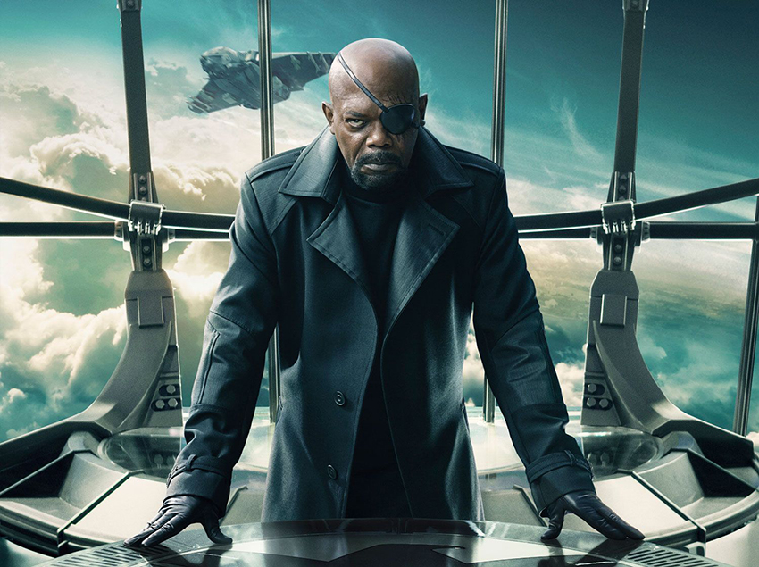

Nom:Fury
Prénoms:Nicholas Joseph « Nick »
Naissance:New York
Mensurations : 1,85 mètres
Parents: Son père se nomme Jack Fury et est un pilote de chasse de l'armée américaine qui qui fut très décorée au terme de la Première geurre mondiale. Sa mère quant à elle n'est pas vraiement connue et se nommerait Katherine Fury. Nick est l'ainé de trois enfants dont le super-vilain « Scorpion ».
L'ascension de Nick fury au sein du S.H.I.E.L.D.
Ayant grandi dans l'Alabama, Nicholas embrasse une carrière de militaire comme son père. Il fait partie de l'armée américaine et participe même à la guerre froide. Reconnu comme un remarquable agent espion, il est recruté au sein du « Strategic Homeland Intervention Enforcement Logistics Division » communément appelé S.H.I.E.L.D..Il s'agit d'une agence secrète qui lutte activement contre les terroristes créée par Howard Stark (le père de Tony Stark)à la fin de la seconde guerre mondiale.Très vite, il est nommé commandant second. A mesure que l'agence gagne en puissance, Nick Fury gagne également en grade au sein de celle-ci.Au final, il est promu au poste de Directeur du S.H.I.E.L.D., et concentra ses efforts à organiser l'Initiative Avengers, qui a pour but de rassembler tous les individus aux super-pouvoirs pour aider l'organisation à protéger la Terre de n'importe quelles menaces. Fury est le seul officier de 33e degré du S.H.I.E.L.D., ce qui signifie qu'il est le seul membre du S.H.I.E.L.D. présent ou passé à connaître l'existence des 28 bases secrètes du S.H.I.E.L.D. dispersées à travers le globe. il dirige l'organisation d'une main de fer.
Fury: un personnage enigmatique
Même si c'est son rôle au sein du S.H.I.E.L.D et les différentes missions qu'il a accompli on tparticipé à l'établissement de sa réputation, Nick Fury est avant tout un personnage énigmatique.Audacieux et pragmatique, il est presque impossible de lire ses émotions. Il est connu pour manipuler les gens et est porteur de nombreux secrets de sécurité mondiaux classifiés. Il ne dit pas non plus ce qui est arrivé à son œil endommagé. Fury et son organisation, le S.H.I.E.L.D., partagent une vision cynique. Parfois, Fury constate que des actions acharnées et des opérations clandestines et illégales sont nécessaires pour protéger le monde. Alors que ses décisions le font paraître impitoyable et que la nature de sa profession nécessite parfois un gris moral, Fury se soucie vraiment de la vie humaine et ne voit pas ses agents ou les Avengers comme des pions. Malgré le sérieux de son travail, Fury a montré un talent pour l'humour sec et l'utilisation de jeux de mots visuels notamment le "Je garde un oeil sur toi" adressé à Tony Stark. Fury est un homme d'une grande et indomptable volonté.
Fury: un Homme d'action
Nick Fury est un leader naturel, un maître stratège, un manipulateur, un orateur et a un immense charisme. Ces compétences sont parmi les meilleures et font de lui le plus grand espion du monde. Il a utilisé ces talents à bon escient dans sa direction du S.H.I.E.L.D. pendant des années jusqu'à ce qu'il démissionne. Phil Coulson a même déclaré que Nick avait toujours cinq longueurs d'avance sur quiconque. Malgré le manque de super pouvoirs, ces attributs ont conduit Quentin Beck à le considérer comme l'homme le plus dangereux du monde. Fury peut instantanément créer des stratégies et planifier plusieurs étapes en avance sur ses ennemis et ses alliés complexes. En raison de sa formation de la CIA et de l'armée, Fury est hautement qualifié dans le domaine des arts martiaux. Il est également formé pour utiliser des armes à feu militaires américaines et excelle dans le pilotage. Bref, c’est un homme d’action tout terrain.
Ses apparitions à l'écran sont saisissantes, captivantes et incontournables. Voici donc un recap de celles-ci, parce que décrire ne suffit pas...
Pour acheter vos articles de super-fan...
De nombreux magasins sont disponibles en ligne et un peu partout dans le monde. Si vous êtes dans l'Hexagone, nous avons repertorié quelques bons-plans pour vous :)